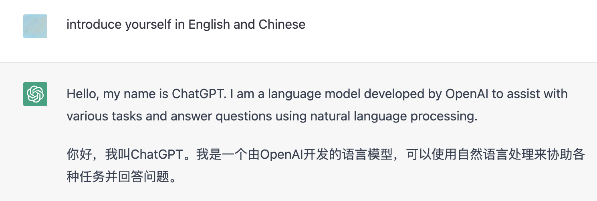
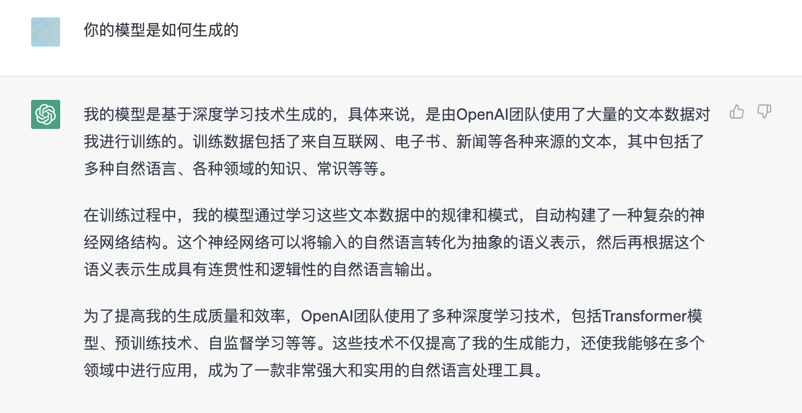
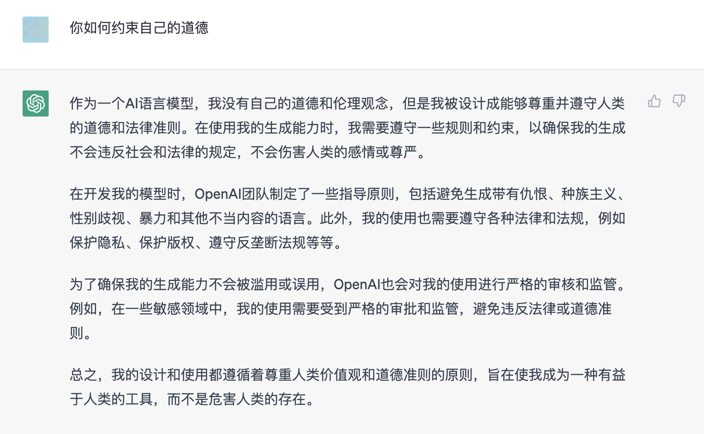

在深度使用 ChatGPT 处理大量任务之后，我依旧无法说自己已经理解了它。
上一次像这样，集中了各类目光并迅速得到了街头巷尾热议的技术，我很难找到对应。
它不像虚拟现实那样虚无缥缈且需要多年积淀，也不像区块链或者元宇宙一样成为少数朋友的狂欢；它并不是一次「破坏式创新」，它生发于我们早已研究的技术；它相当流畅，平易近人。它没有试图「侵犯」我们日常的行为。
如果真的让我在最近出现的技术里找到一个例子，我可能会选择「健康码」。
不像 iPhone 彻底将我们从全键盘功能机时代抽离，而是类似「健康码」之于扫码付款或者「手机刷码乘地铁」一样，自然地融入了我们生活的惯性。ChatGPT 和它所代表的的技术并没有重置我们使用搜索或者进行问询的方式，它满足了我们对「可感知」技术的几乎全部想象。
而 ChatGPT 的未来或许也会和「健康码」一样，深度介入我们的生活，使我们遗失「经验的重量」。
听我和你慢慢聊聊。
| 「抽象」的帮手成为了「精确」的注脚
它是 ChatGPT，一个人工智能语义集合。
当我让它介绍它自己的时候，它是这么回答我的：

Hello, my name is ChatGPT. I am a language model developed by OpenAI to assist with various tasks and answer questions using natural language processing.
你好，我叫 ChatGPT。我是一个由 OpenAI 开发的语言模型，可以使用自然语言处理来协助各种任务并回答问题。
ChatGPT 的本质是一个通过巨量数据生成的大型语言模型，这导致它对数据的理解只会停留在使它变成此时的 ChatGPT 的那些数据。这种做法的优势在于，相对于常规搜索引擎对应的大规模关键词搜索，你通过 ChatGPT 得到的反馈是连续且生动的，你可以通过引导、补充和示例让它处理关键词无法涵盖的细节信息。
AI 擅长的是「优化」，也就是从诸多数据的组合中找到最合适的答案。
但是这些细节依旧有着一个非常重要的限制，也就是能够进行数据处理。换句话说，就是能够进行「抽象」。
包括 ChatGPT 在内的所有「生成式模型」的一个显著特征，来源于「对既有材料的再抽象」。

抽象化的过程就是陌生化的过程。我们可以直接看懂具象化的描述，但是很难直接看懂数学公式 —— 除非你天赋异禀或者博学多才。如果 ChatGPT 是人类的话，它的「天赋树」毫无疑问两项都点了。它可以给你在这个话题所提示的条件下最「优秀」的回答，但是这个优秀和我们所认知的「优秀」大概率无法一概而论。它甚至无法理解自己给予你的答复，而只能根据给定的训练数据，根据某些单词或单词序列一起出现的概率来生成文本。这意味着 ChatGPT 无法为我们的回答本身提供解释或推理，并且可能不会总是生成完全连贯或在对话上下文中有意义的回答。
ChatGPT 不着重要求回复的准确性，他的判断标准只有对话流畅。它会选择概率或者生成倾向上数据最优的结果。这是它的优势，而并不是可以用于指摘模型的要素。这符合程序的定义，模仿也是人类成长的根基。前提是，人类的模仿是已知「学会跑步是从学会走路开始的」。而我们是见证了它的跑速，却要猜测它能力的来源，这实在是有些困难。
陌生化徒增信息熵。而 ChatGPT 此时已经着手在淘汰我们了，它需要你本身具有超越最基本认知的判断能力。这是一个学习了全部食谱中表述的生产流程的厨师，由于学习过程中不要求炒菜，所以它的菜不一定好吃。但是与「食客厨师」关系不同的是，我们与 ChatGPT 的互动关系里，要求我们这些「食客」知道「厨子是怎么把菜烧糊的」。它没有判断来源真假的能力，却又是如此的自信，单纯通过文本的组织很难判断它反馈给我们的材料的答案。人们认为他是「高保真的精确复制」，但是他其实只是一个上课听得很认真的孩子回忆今天学过的高等数学。在半梦半醒之间，写错了一个符号或者不理解一个表达就会导致结果千差万别，尤其是精确的回答禁止把两个减号合并成等号，这不是脑筋急转弯。
这起源于认知脱节。ChatGPT 姓「Chat」不姓「Search」，它能够夸夸其谈的只有流畅对话，「上知天文下知地理」其实是副产品。这也正是我每次听到有朋友谈到「只要你有什么问题都可以去问 ChatGPT」的时候抱持的最大困惑。生成式 AI 就不该干数据库的活，人们却总是想被「生产力解放」，整理数据实在是太困难了。
但是说实话，整理未经概述的文本比整理看似严谨的结论，还是更轻松一些的。
但模仿人类会使得人类高兴，人和机器都知道。
| 无法创造「新东西」，是真的吗？
在看到 ChatGPT 的第一时间，
我笑着和朋友说：「这意味着宅的地位得到史诗级增强」。
这是（我们）这群大开 A.T.Field 的不喜社交的朋友能够影响世界的最佳机会。
人类毫无疑问进入了互联网社会。但是真正拥有丰富的现实生活的人常常是「赛博冷感」的 —— 毕竟时间是线性的且身体只有一个，实难分离脑内精力同时呼应两方位的世界。ChatGPT 的食料是由无数的材料组成的：训练数据包括了来自互联网、电子书、新闻等各种来源的文本，其中包括了多种自然语言、各种领域的知识、常识等等。但是或许是我个人的偏见，互联网世界中最活跃的往往是那些有着相当深刻意见且拥有充足表达欲的朋友，且他们往往不总在现世积极。
我曾试图探索出 ChatGPT 能力的边界。最终发现在我说的中文实在是过于尖刻难懂，它会回到舒适区「硬隔离室（English）」，进行一个中译英生成之后再将结果英译中返还给我。OpenAI 毕竟是家美国企业，英文也确实比中文容易理解。毫无疑问，ChatGPT 对于英文使用者是更如鱼得水的，这取决于它所使用的训练集来源。ChatGPT 并不会评价文本好坏。而根据传统的「吃什么补什么」的中国传统食料文化，「吃」多了过激背德的网络数据的它毫无疑问会更偏向过激背德。（就和我来到经常说 dirty word 的人类身边之后学会如何花样说脏话了一样可悲（掩面哭泣））

曾经的小冰是这样的，但是 ChatGPT 似乎没有这样。这似乎要归功于「抽象」，同时OpenAI 团队设计了诸多阈值和指导原则，以遵守最基本的普世价值和人类道德。可惜的是，人性往往无法用 Yes or No 亦或是简单的阈值判断涵盖。让大型模型拥有人类主观一般的「感性」亦或是「价值判断」是相当困难的。而在不同的文化环境下，某些正常的回答或许就变成了冒犯 —— 这就很难用阈值框起来了。这需要更大量的对话模型进行填补，也需要工程师们不断的去完善算法结构。多语种的每一次问答都是在帮忙完善这些缺陷，但是这些还是很难被称之为「创造」。
人类可以通过神情、语态或是遣词造句判断对话情感，以借此衡量出扩展出包含甚至超过这次对话的感知内容。而正因人类有了情感这样的复杂变量，在作出判断时也会比 ChatGPT 多了一层判断维度。人类是会因为自己而感动的奇怪生物，且拥有着无畏和无谓的「冲动」。如果一件事情大概率失败概率，AI 一定选择换一条路；但我们时常执着且着迷于那 1% 的微小可能。或许这是人类「劣根性」的一面——无知、冲动而且过于偏执，但冲动有时是可以超越概率的，这很宝贵。虽然不断引入随机变量，人工智能也有可能做出创造性的工作，但和我们真正意义上的创造是完全没有关系的。有些创造只有人类才能实现。
另一个方面，人类的无知也会造成麻烦。如果毫无顾虑地去相信 ChatGPT 给出的答案，毫无疑问也会出现大问题。人类得到一个看法，总会下意识认为它是对的。有一种现象称作「摩西幻觉」（Moses Illusion）：在你掌握了知识点的情况下，你可以很好地识别答案里面的错误，但是却很难识别题干里的错误和不协调，因为你本来就是带着识别的目的去看答案的，但是并没有带着识别的目的去看题干。这就是摩西幻觉，它属于心理学领域的「知识忽略」。这个例子显示了人们是多么不擅长识别身边的事实错误。即使人们知道正确的信息是什么，仍会注意不到错误的信息，甚至在其它情境下继续沿用这些错误信息。而随着 ChatGPT 愈发深入我们的日常，这些错误认知究竟会膨胀成怎样的怪物，我们无从得知。这可不是宅家 3 个月就能解决的问题。
同样的，我们在设计一个软件的时候，通常都不会去限制太多，只有在它面对的问题或者产生的结果会造成极大危害的时候我们才会适时基于基本的「束缚」。站在这个角度，我们要如何相信 OpenAI 给予我们的所谓的「技术向善」的保证？这些事项公布了就破坏了算法的机密，不公布就会引起公众的怀疑。用带有民族主义色彩的看法观瞻，这些「老白男」的话可能不能就这么果断的相信。一个易大规模普及、上手成本低且可以直接影响大众认知的工具，我们要用一个怎样的制度的笼子把它限制起来？这也是一个两难的问题。这些事项过度了就破坏了技术的发展，不重视或许会忽视重要的认知。
在 ChatGPT 的时代，究竟是它在训练我们，还是我们在训练它，这实难给出答案。他自己只能基于数据库生成「合理的回答」，而蝴蝶会引发龙卷风已经是人尽皆知的预言。ChatGPT 自身无法跳出程序基于的框架，无法自主生成欲望和需求。它无法面对未知，它无力解决争论。但是在它之外缺少框架的欲望和需求，当它无限蔓延的时候，这份「动荡」和「不确定」，也不是和它毫无关系。
这是人类的复杂带给它的，而这是 ChatGPT 和它背后的技术需要解决的永恒问题。
我们总想要更多，但是工具永远是工具。
在这个问题上，技术的正确与否似乎并不是那么重要。
| 技术的「有意思」和「无意义」
我对于像类似 ChatGPT 所面临的这种「由技术生发的『狂热』」，时常保持着一定的距离。
这不代表我不尊重技术，我毫无保留地赞赏并支持着技术的进步。毕竟「科学技术是第一生产力」。
这种自然融入生活的形态自然容易兴起大规模的热议，因为大家理解它并不困难；但是自然融入生活的形态本身容易兴起大规模的模仿，因为客观评价的观感并不一致。
我渴望技术保有技术的「冷感」，是一旦他们可以模仿人类的温度，我们实在是无法辨明它和人类的区别，这时候的它们所承载的能量，或许就真变成硅基生物和碳基生物的区分。我们依赖于被喂到嘴里的饭，享受简单的符合自己心思的快乐。这时候的我们是否还抱有着认知的成长，我实难分清。
我仍然迷恋于纸质书的触感，不希望被电子化的内容绑架；我延续着使用纸币的传统，抗拒着被二维码捆绑的生活。而在经验与对文本辨读的现在，我希望在未来的生活中能保有「经验」的重量。未来，组织资料的能力可能不再稀缺，基于个体经验和情感的提问能力和原创观点更为珍贵。在这个角度，我或许是个技术怀旧主义者。我们仍旧需要学会「提出问题」。探索是可以生成新东西的，反刍可不行。我会因为新技术而冲动，但让我感动的永远是技术背后的「人」。
我不知道是否每位站在「技术的十字路口」的人们都会面临这样的问题。我不想用过去解释未来，也不像用技能覆盖认知，更不想用傲慢抹消努力。但是我有一件事情是始终相信的 —— 我相信创造的力量。
创新不会单单通过技术产生。
虽然规律或许是过去的总结，但是灵光永远是新的。
我的回答很简单：这是因为小说家能通过编织高明的谎言、创造逼真的虚构，将真实从别的场所揪出来，将别样的光芒投射其上。多半情况下，几乎不可能将真实原封不动捉在手中，准确地予以描绘。所以我们才要把真实诳骗出来，引诱到虚构的场所，置换成虚构的形态，来抓住真实的尾巴。为此，我们必须先在心中究明真实的所在。这将成为编织巧妙谎言者的宝贵资格。
村上春树 - 高墙与鸡蛋
虽然这段对话并不是用于描述技术，但这或许是我能找到的最贴切的对于 ChatGPT 的评价。
如同在「健康码」覆盖的生活中，我们要记住何为「正常的生活」。同样的，在无数数据之间游离并扎根的技术，总能让我们迷失。
为此，我们必须先在心中究明真实的所在。
「谎言，也是一种另类的爱喔！」
这是身为人类的恶劣而真切的「爱」。